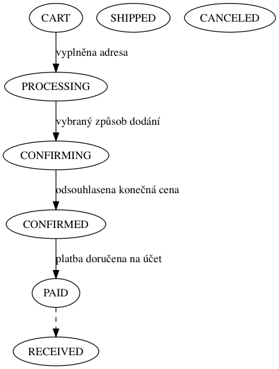

Checkout
Slouží ke zpracování Cart a jeho úspěšné přetvoření
do objednávky Order a poté ke správě jejich stavu.
Cart serializuje do DB pouze odkazy na nabídky a uživatele, jinak
ceny a modifikátory (slevy, daně) se počítá za běhu v metodě
Cart.update, která vyvolá modifikátory ve třech fázích pomocí signálů
pre_process_cartpost_process_cartprocess_cart_item
Handler signálu dostane instanci Cart (resp. CartItem) a očekává
se, že budou využívat pouze metody Cart.add_modifier, která přidává
tuple (label, price) do seznamu extra_price_fields a modifikuje total.
Process objednání
Objednat zboží lze i bez přihlášení - pak je celý objednávkový process řízený
emailem a bez hesel.
Uživatel naplní košík a pak klikne na “Objednat”.
1. Kontakt
Zobrazí se formulář pro fakturační, a pokud existuje tak i dodací, adresu.
- Přihlášený uživatel má tyto informace předvyplněné.
- Npřihlášený uživatel má navíc pole email, které se nekontroluje,
zda-li už je v databázi
2. Doprava
Způsob dopravy si každý obchod určuje zvlášť, jakou formu předání zboží poskytuje.
- Osobní odběr je cajk, pro nás žádná práce
- Dopravu zajistí prodejce znamená, že ze všech produktů od jednoho
prodejce vybereme zakoupený výrobek s nejdražším poštovným. Za tuto cenu
posílá prodejce všechny své výrobky dohromady.
3. Platba
Platba určuje jak se potvrdí objednávka.
- Platba při dodání je pro nás nejistá a proto požadujeme následné potvrzení
objednávky. Odešleme email s odkazem na potvrzení objednávy.
- Platba kartou je pro nás nejjistější. Po zaplacení ihned označíme objednávku
jako zaplacenou.
Uživatel není přihlášený
- Zobrazí se mu formulář s komunikačním emailem, fakturační a volitelně dodací adresou
- Vybere si způsob dopravy
- Zaplatí
Logika objednávek
Nad-objednávka neobsahuje žádné zboží ale má pouze pod-objednávky a referenci na
uživatele. Toto má čistě technický důvod, aby byla pouze jedna objednávka pro
jednoho uživatele v časovém rozmezí několika sekund. Pod-objednávky jsou
vytvořeny jedna pro každý obchod, ze kterého bylo nakoupené zboží v hlavní
objednávce. pod-objednávky nikdy nemá referenci na uživatele.
Nad-objednávka nikdy nemá přiřazený obchod. Způsob a směr platby rozhodne až
payment processor. Ten by měl řešit problém hromadných plateb. Proforma je tedy
vystavena na obchod v nad-objednávky, ale faktury jsou vystaveny na jednotlivé
obchody z pod-objednávky. nad-objednávky drží hodnotu, která je rovna součtu
hodnot všech pod-objednávky.
Nad-objednávka je jako jediná dostupná dostupná přes
shop.order.get_order_from_request, protože jako jediná má přiřazeného
uživatele.
Stavy objednávek

Na začátek výtah ze zdrojového kódu:
PROCESSING = 10 # New order, addresses and shipping/payment methods chosen (user is in the shipping backend)
CONFIRMING = 20 # The order is pending confirmation (user is on the confirm view)
CONFIRMED = 30 # The order was confirmed (user is in the payment backend)
PAID = 40 # (COMPLETED) Payment backend successfully completed
SHIPPED = 50 # The order was shipped to client
CANCELED = 60 # The order was canceled
- PROCESSING
- Stav do kterého je objednávka vytvořena. K vytvoření objednávky dojde při
kliknutí na “Proceed to checkout” z náhledu nákupního košíku. V tomto stavu se
musí nacházet nad-objednávky i pod-objednávky vždy současně.
- CONFIRMING
- V tomto stavu má objednávka přiřazený způsob dopravy
(
ShippingOption) a vygenerované příslušející
ExtraOrderPriceField které reprezentuje cenu dopravy.
V tomto stavu se musí nacházet nad-objednávky i pod-objednávky vždy současně.
- UNCONFIRMED
- Jsou objednávky, které byly vystaveny anonymním uživatelem. Byl tu nápad, že
pošleme uživateli email pro potvrzení objednávky a pokud na něj klikne, tak
nejen že přepneme objednávku na CONFIRMED, ale také mu potvrdíme email a
nabídneme volbu hesla.
- CONFIRMED
- V tomto stavu má objednávka zvolenou metodu zaplacení a s ní všechny
ostatní náležitosti (fakturační a doručovací adresu). Ať už uživatel zvolí
platit zakázky zvlášť nebo dohromady stav nad-objednávky i pod-objednávky
musí být vždy konzistentní = stejný. Payment handler nakonec vygeneruje
proformy pro správé objednávky a ty se rozešlou zákazníkům (tzn. pouze
objednávky s proformou se posílají emailem). Spolu s proformou odesíláme také
fakturu každému obchodu z CONFIRMED pod-objednávky, aby si ji mohli
předvytisknout.
- COMPLETED (PAID)
- Tento stav značí, že objednávka byla zaplacena v celé výši. V
případě platby při dodaní tento stav musí manuálně přepnout obchodík při
obdržení platby. Při jakémkoliv jiném způsobu platby, tento stav nastavuje
přímo platební procesor. Pod-objednávky ve stavu PAID zpřístupní faktury i
zákazníkovi. Zákazník nikdy nedostane fakturu pro nad-objednávky,
protože by se pak záruka vztahovala na vydavatele faktury.
- SHIPPED
- Nastane jen v případě, že zboží odesílá prodejce. Je to způsob jak dát vědět
zákazníkovi, že jeho zboží je na cestě.
- RECEIVED
- Objednávka je dokončena = zákazník drží zboží v rukou.
- CANCELLED
- Rušit objednávku může jen zákazník. (Ve všech stavech < COMPLETED (PAID))